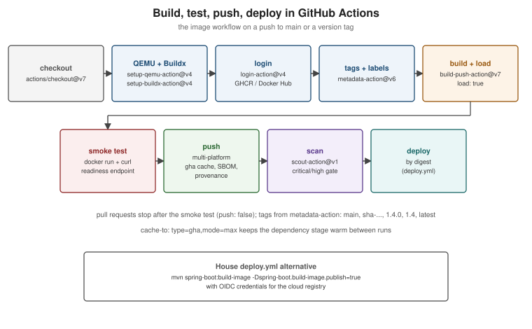

Docker CI/CD with GitHub Actions
|
This content was generated with the assistance of AI and should be verified against the official documentation before being relied on in production. |
Spring Boot Integration Tests with
Testcontainers covers the build.yml that verifies every change. This page covers the other half: building the
image in CI, testing it, and publishing it with the right tags and supply-chain metadata, using Docker’s official
actions at their current majors (docker/setup-qemu-action@v4, docker/setup-buildx-action@v4,
docker/login-action@v4, docker/metadata-action@v6, docker/build-push-action@v7, docker/bake-action@v7,
docker/scout-action@v1, docker/setup-docker-action@v5, docker/setup-compose-action@v2) with
actions/checkout@v7 and actions/setup-java@v6. The underlying Buildx features are explained on
BuildKit and Buildx. If branches, tags and pull requests that trigger
these workflows are new territory, see Git & GitHub first.

The building blocks
| Action | What it does |
|---|---|
|
Installs QEMU |
|
Creates a Buildx builder with the |
|
Logs in to a registry: GHCR with |
|
Computes tags and OCI labels/annotations from the Git ref, event and commit. |
|
Runs |
|
Runs |
|
Runs Docker Scout ( |
|
Install a specific Docker Engine or Compose version instead of the runner’s preinstalled one. |
Derived from each action’s README (linked under References) and Docker’s Docker Build GitHub Actions section.
Logging in
permissions:
contents: read
packages: write # needed to push to ghcr.io with GITHUB_TOKEN
steps:
- name: Log in to GHCR
uses: docker/login-action@v4
with:
registry: ghcr.io
username: ${{ github.actor }}
password: ${{ secrets.GITHUB_TOKEN }}
- name: Log in to Docker Hub
uses: docker/login-action@v4
with:
username: ${{ vars.DOCKERHUB_USERNAME }}
password: ${{ secrets.DOCKERHUB_TOKEN }} # a Docker Hub access token, never the account passwordFor Amazon ECR, Google Artifact Registry or Azure Container Registry, obtain short-lived credentials with the
provider’s OIDC action first (aws-actions/configure-aws-credentials, google-github-actions/auth,
azure/login, with permissions: id-token: write), then log in; the login-action README has one example per
registry. Derived from docker/login-action and GitHub’s
Working
with the Container registry. For the ACR side of that azure/login OIDC push in depth, see
Azure Container Registry.
For the ECR side of the aws-actions/configure-aws-credentials OIDC push, see
Container Registry, and for the AWS CodeBuild/CodePipeline alternatives to GitHub Actions, see
Developer Tools and DevOps.
For the Artifact Registry side of a Google Cloud push, see
Container Registry and Builds, and for the Cloud Build and Cloud Deploy alternatives to
GitHub Actions, see Developer Tools and DevOps.
Tags and labels with metadata-action
- name: Compute image metadata
id: meta
uses: docker/metadata-action@v6
with:
images: ghcr.io/${{ github.repository }}
tags: |
type=ref,event=branch
type=ref,event=pr
type=semver,pattern={{version}}
type=semver,pattern={{major}}.{{minor}}
type=shasha-3f2a1bc"] t --> tt["1.4.0
1.4
latest
sha-9c0d4e2"] pr --> tpr["pr-42
sha-77ab5e1
(built, not pushed)"]
steps.meta.outputs.tags and steps.meta.outputs.labels feed straight into build-push-action; the labels include
the OCI source, revision, created and version keys. With the default flavor: latest=auto, latest is
added for every tag push matched by type=semver (except pre-releases such as v1.5.0-rc.1) or
type=ref,event=tag — the action does not compare versions, so a hotfix tag on an older line (v1.3.5 after
v1.4.0) moves latest back. To decide yourself, turn the automatic tag off and add it with an enable condition:
- name: Compute image metadata
id: meta
uses: docker/metadata-action@v6
with:
images: ghcr.io/${{ github.repository }}
flavor: |
latest=false
tags: |
type=ref,event=branch
type=ref,event=pr
type=semver,pattern={{version}}
type=semver,pattern={{major}}.{{minor}}
type=sha
# latest only for tags of the current release line; bump the prefix when a new line ships
type=raw,value=latest,enable=${{ startsWith(github.ref, 'refs/tags/v1.4.') }}Derived from docker/metadata-action — Latest tag (and its
flavor input and type=semver sections) and
Manage tags and labels.
Caching
The gha cache backend stores BuildKit’s cache in the GitHub Actions cache service, so the dependency stage of a
multi-stage build is reused across runs:
- uses: docker/build-push-action@v7
with:
context: .
cache-from: type=gha
cache-to: type=gha,mode=maxDerived from Cache management with GitHub Actions. For
RUN --mount=type=cache directories (such as ~/.m2), which the layer cache does not export, the same page
documents persisting them with actions/cache.
Test before push
Build once, load the image into the runner’s Docker, test it, and push only if the tests pass:
- name: Build and load for testing
uses: docker/build-push-action@v7
with:
context: .
load: true
tags: orders-service:test
cache-from: type=gha
- name: Smoke-test the image
run: |
docker run -d --name smoke -p 8080:8080 orders-service:test
timeout 90 bash -c 'until curl -fsS http://localhost:8080/actuator/health/readiness; do sleep 2; done'
docker rm -f smoke
- name: Build and push
uses: docker/build-push-action@v7
with:
context: .
push: true
tags: ${{ steps.meta.outputs.tags }}
labels: ${{ steps.meta.outputs.labels }}
cache-from: type=gha
cache-to: type=gha,mode=maxThe second build is almost free: every step hits the cache. Derived from
Test before push with GitHub Actions. To hand an
image to a different job (for example a matrix of test jobs), export it as an artifact (outputs:
type=docker,dest=${{ runner.temp }}/image.tar), upload it with actions/upload-artifact, and docker load it in
the other job; see Share built image between
jobs.
Multi-platform images
- uses: docker/setup-qemu-action@v4
- uses: docker/setup-buildx-action@v4
- uses: docker/build-push-action@v7
with:
context: .
platforms: linux/amd64,linux/arm64
push: true
tags: ${{ steps.meta.outputs.tags }}A JVM image cross-builds cheaply when the Maven stage uses FROM --platform=$BUILDPLATFORM, as the Dockerfile on
Java and Spring Boot Images does (see
BuildKit and Buildx). For native code, split the
platforms across native ubuntu-latest and ubuntu-24.04-arm runners and merge the digests; Docker documents that
pattern in Multi-platform image with GitHub
Actions.
Bake, Scout and pinned tool versions
# Build every target of docker-bake.hcl, using the metadata-action bake file for tags and labels
- uses: docker/bake-action@v7
with:
files: |
./docker-bake.hcl
cwd://${{ steps.meta.outputs.bake-file }}
push: true
# Fail the job on fixable critical or high CVEs in the image just built
- uses: docker/scout-action@v1
with:
command: cves
image: ${{ steps.meta.outputs.tags }}
only-severities: critical,high
only-fixed: true
exit-code: true
# Pin the Docker Engine or Compose version instead of the runner's preinstalled one
- uses: docker/setup-docker-action@v5
with:
version: v29.8.1
- uses: docker/setup-compose-action@v2
with:
version: v5.5.1Derived from docker/bake-action, docker/scout-action (Scout needs a Docker Hub login), docker/setup-docker-action, docker/setup-compose-action and Integrate Docker Scout with GitHub Actions.
The Docker GitHub Builder is an alternative to wiring these actions yourself: Docker-maintained reusable workflows
(docker/github-builder) that own runner selection, caching, provenance, signing and multi-platform manifests, so a
repository’s workflow only decides when to build. See
Docker GitHub Builder.
A complete image workflow
# .github/workflows/image.yml -- build, test and publish the service image to GHCR
name: image
on:
push:
branches: [main]
tags: ["v*.*.*"]
pull_request:
permissions:
contents: read
packages: write
id-token: write # keyless signing / attestation identity
attestations: write
jobs:
image:
runs-on: ubuntu-latest
timeout-minutes: 30
steps:
- uses: actions/checkout@v7
- uses: docker/setup-qemu-action@v4
- uses: docker/setup-buildx-action@v4
- name: Log in to GHCR
if: github.event_name != 'pull_request'
uses: docker/login-action@v4
with:
registry: ghcr.io
username: ${{ github.actor }}
password: ${{ secrets.GITHUB_TOKEN }}
- name: Image metadata
id: meta
uses: docker/metadata-action@v6
with:
images: ghcr.io/${{ github.repository }}
tags: |
type=ref,event=branch
type=ref,event=pr
type=semver,pattern={{version}}
type=semver,pattern={{major}}.{{minor}}
type=sha
- name: Build for testing
uses: docker/build-push-action@v7
with:
context: .
load: true
tags: orders-service:test
cache-from: type=gha
- name: Smoke test
run: |
docker run -d --name smoke -p 8080:8080 orders-service:test
timeout 90 bash -c 'until curl -fsS http://localhost:8080/actuator/health/readiness; do sleep 2; done'
docker rm -f smoke
- name: Build and push (multi-platform, SBOM and provenance)
id: push
uses: docker/build-push-action@v7
with:
context: .
platforms: linux/amd64,linux/arm64
push: ${{ github.event_name != 'pull_request' }}
tags: ${{ steps.meta.outputs.tags }}
labels: ${{ steps.meta.outputs.labels }}
annotations: ${{ steps.meta.outputs.annotations }}
cache-from: type=gha
cache-to: type=gha,mode=max
sbom: true
provenance: mode=maxDerived from the Docker Build GitHub Actions pages and GitHub’s Publishing Docker images. The Dockerfile it builds is the one on Java and Spring Boot Images; pull requests build and test but never push.
The house deploy.yml variant
The house deployment workflow (generated by .claude/skills/iru-setup-java-springboot-github-workflows) builds the
image without a Dockerfile, using Cloud Native Buildpacks through the Spring Boot Maven plugin, and pushes it with
credentials passed as docker.publishRegistry.* properties; the cloud credentials come from OIDC, so no long-lived
access key is stored:
# .github/workflows/deploy.yml (excerpt)
permissions:
contents: read
id-token: write # OIDC to the cloud provider
packages: write
jobs:
deploy:
runs-on: ubuntu-latest
environment: ${{ inputs.environment }} # approval gate and environment-scoped secrets
steps:
- uses: actions/checkout@v7
- uses: actions/setup-java@v6
with:
distribution: temurin
java-version: '25'
cache: maven
- name: Resolve image tag
id: meta
run: echo "tag=${{ inputs.image_tag || github.sha }}" >> "$GITHUB_OUTPUT"
- name: Configure AWS credentials (OIDC)
uses: aws-actions/configure-aws-credentials@v6
with:
role-to-assume: ${{ secrets.AWS_DEPLOY_ROLE_ARN }}
aws-region: ${{ vars.AWS_REGION }}
- name: Build and push the image with Cloud Native Buildpacks
run: |
mvn -B -ntp -pl boot -am spring-boot:build-image -DskipTests \
-Dspring-boot.build-image.imageName=${{ vars.IMAGE_REPOSITORY }}:${{ steps.meta.outputs.tag }} \
-Dspring-boot.build-image.publish=true \
-Ddocker.publishRegistry.username=${{ secrets.REGISTRY_USERNAME }} \
-Ddocker.publishRegistry.password=${{ secrets.REGISTRY_PASSWORD }}This matches the skill’s workflow shape (the skill itself still pins actions/checkout@v5 and
actions/setup-java@v5; the current majors are shown here). The plugin configuration that makes the
docker.publishRegistry.* properties work is on
Java
and Spring Boot Images. Derived from the Spring Boot Maven plugin’s
Packaging OCI Images page.
Immutable tags and latest
-
Deploy by an immutable identifier: the commit SHA tag or, better, the digest that
build-push-actionoutputs (steps.push.outputs.digest). Environments then record exactly what runs. -
Treat version tags (
1.4.0) as immutable too — enable immutable tags on the registry where supported (see Registries and Docker Hub). -
Let
latestbe a convenience for humans (docker run ghcr.io/myorg/orders-service), never a deployment input.metadata-actionmoves it on every release tag push, hotfixes of older lines included, unless you control it withflavor: latest=falseas shown in Tags and labels withmetadata-action.
To add a load-test stage to such a pipeline, see CI/CD with Maven, Docker & GitHub Actions in the JMeter section.
GitHub Actions reference
The general workflow language, runners, caching and security model are in the GitHub Actions reference; see especially Caching and Artifacts and Security Hardening.